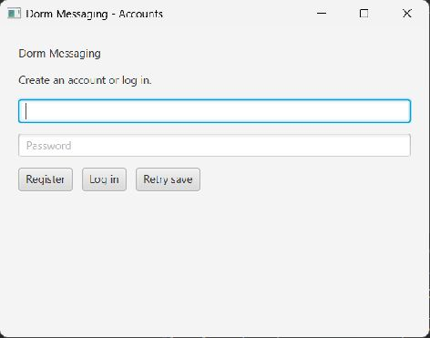

Steps
- Launch the application. The Accounts window opens first.
- Enter a unique username in the Username field.
- Enter a password in the Password field.
- Click Register.
-
Read the status message. If registration and saving succeed,
the application displays:
Saved. Use your username and password to log in when needed.
- Enter your password again, then click Log in. Registration clears the password field and does not automatically log you in.

Registration Rules
- Username and password cannot be blank.
- Your username must not already be registered.
-
Usernames are case-sensitive. For example,
Alexandalexare different usernames. - Spaces around your username are removed.
- Password spaces are preserved exactly.
If Something Goes Wrong
If a validation message appears, correct the indicated field and click Register again.
If the application reports that changes could not be saved, your account remains in memory. Click Retry save before closing the application.
After logging in, select your dorm in the Community window.